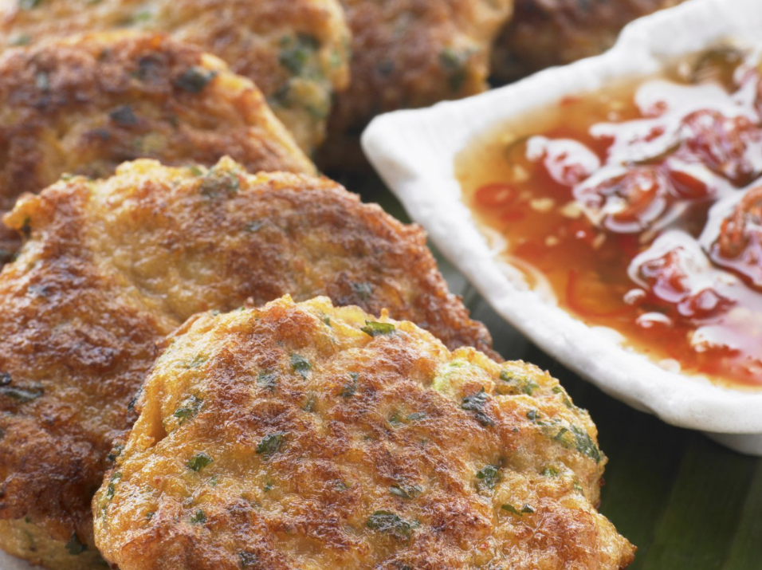

Green Aquaculture – the Key to Sustaining Export Competitiveness
12:46:45 PM | 10/7/2025
Facing challenges such as environmental pollution, disease outbreaks, rising costs, and pressure from export markets, the adoption of sustainable farming models has become a decisive factor for Vietnam’s seafood industry to maintain its position, enhance value, and ensure long-term growth.

Vietnam Fire and Rescue Association Collective Efforts for Safe, Sustainable Living Environment
10:06:49 AM | 10/6/2025
With fires, accidents, and natural disasters growing more complex, fire safety is not only the responsibility of authorities but also of society as a whole. The Vietnam Fire and Rescue Association (VFRA) serves as a bridge connecting state agencies, businesses, and communities to promote legal awareness and strengthen capacity in fire safety and rescue.

Fire Safety and Rescue Forces Partnering with Enterprises for Safe, Efficient Business Environment
9:53:23 AM | 10/6/2025
Through awareness campaigns, professional guidance, and thorough safety inspections, the Fire Prevention, Fighting, and Rescue Police have consistently supported the business community in all stages of production and operations. Upholding the motto "prevention is key," the force not only builds a solid shield against fire and explosion risks but also creates confidence for businesses to invest and expand their activities sustainably.

Vietnam’s Tilapia Exports in the First 8 Months of 2025 Hit a 5-year High
3:54:13 PM | 10/1/2025
According to Vietnam Customs, Vietnam’s tilapia exports (including red tilapia) reached over USD 63 million in the first 8 months of 2025, up 174% from the same period last year. This figure exceeded Vietnam’s tilapia export value over the past five years, since 2020. The US remained the largest importer, accounting for 62% of Vietnam’s tilapia exports.

87% of Businesses in Vietnam Face Challenges with Succession Planning
3:35:57 PM | 9/18/2025
Global talent solutions provider Robert Walters Vietnam has released a report on the state of succession planning in Vietnam. The study, “Success in succession: Building a leadership pipeline to keep your business thriving”, finds that 87% of businesses face challenges, with 44% lacking a plan and over one in five rating their strategies as ineffective.

German Market: Gateway to EU to Boost Vietnamese Exports
10:11:17 AM | 9/15/2025
Over the past two decades, trade between Vietnam and Germany has grown significantly, establishing itself as one of the strongest pillars of bilateral cooperation. Serving as a key gateway to the European market, Germany also helps enhance Vietnam’s role in the global supply chain.

Vietnam’s Exports of Fish Cakes and surimi surge, expanding markets in 2025
11:13:37 AM | 9/9/2025
Vietnam’s fish cakes and surimi exports in the first seven months of 2025 showed impressive growth despite global market volatility. According to Vietnam Customs data, surimi exports in July alone reached over $30 million, increase 23% compared to the same period in 2024. This contributed to a total export turnover of more than $195 million for the period, a 28% increase compared to the same period in 2024.
Vietnam’s Gen Z Drives Secure and Inclusive Digital Payments
2:24:50 PM | 9/5/2025
Findings highlight high financial ambition, frequent e‑commerce use, and elevated security expectations, signalling demand for trustworthy, easy‑to‑use payment experiences across platforms for young people in Vietnam.